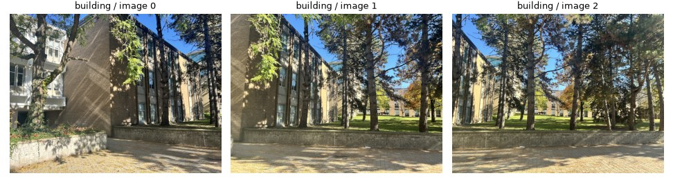
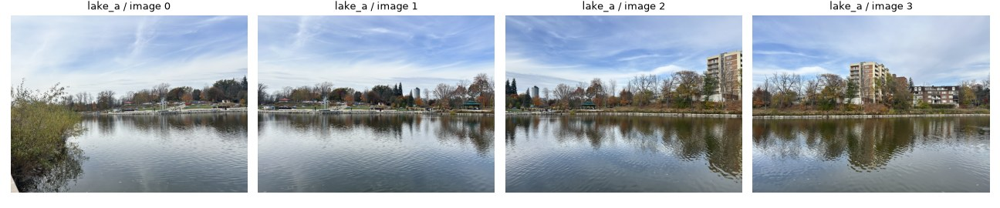
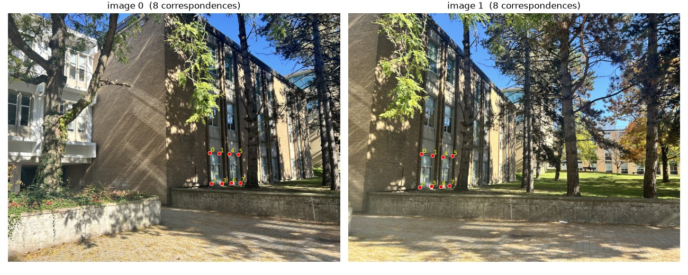
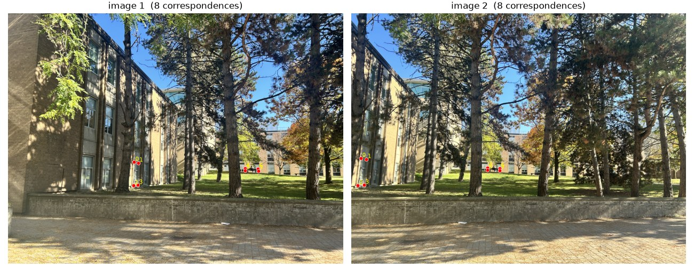
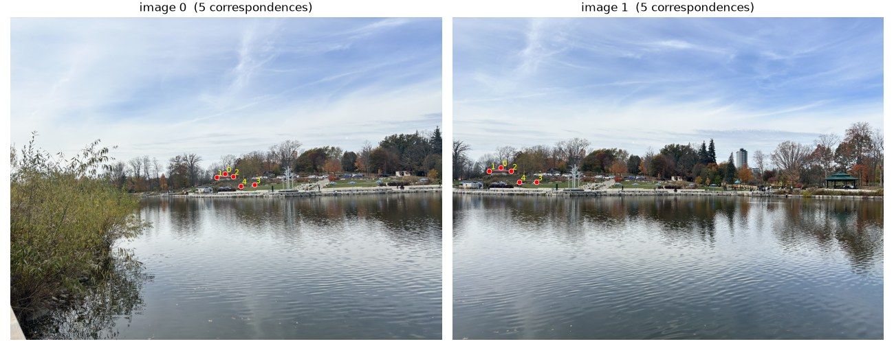
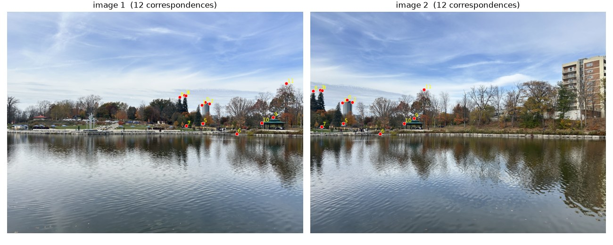
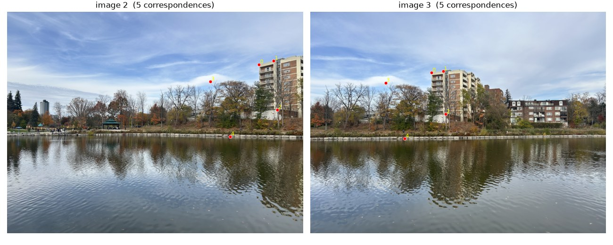
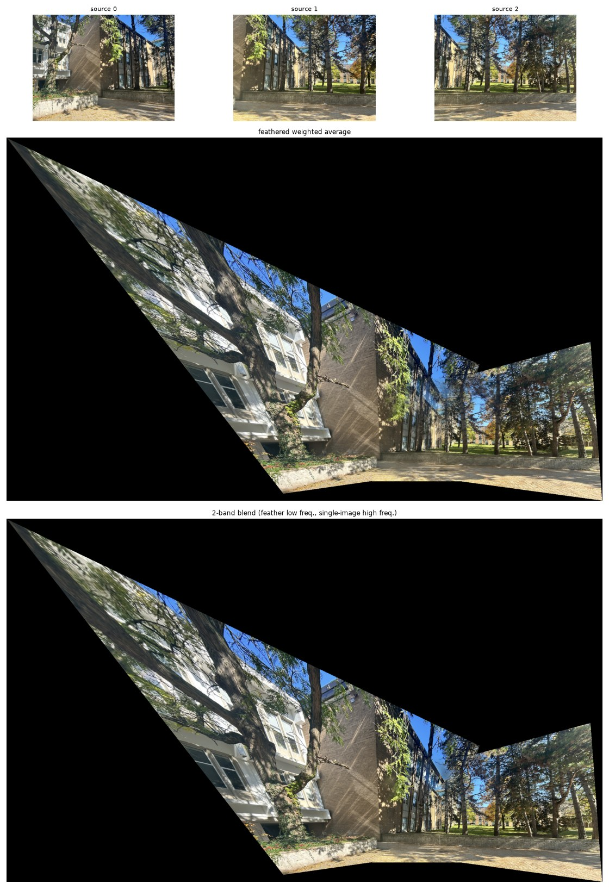
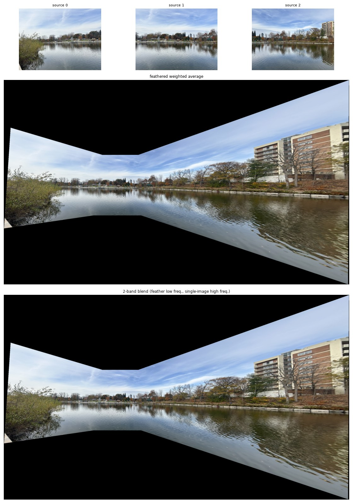
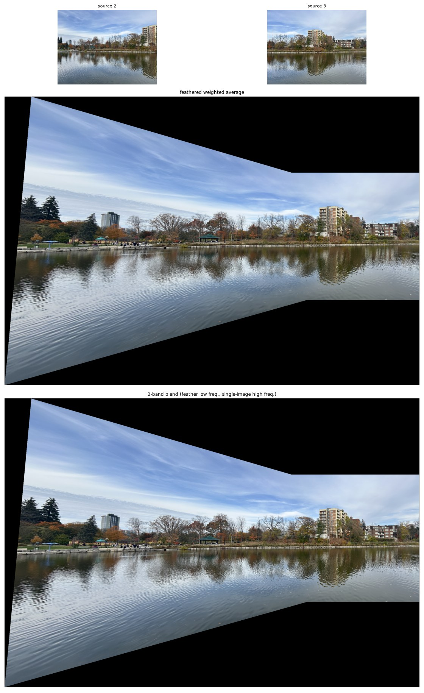

Have you ever wondered how our phones made panoramas? I certainly haven't! I did a lot of trusting the process, and everything seemed to work out! But in case you have, this is the read for you! I started by touching some grass and shooting several sets of images, displayed here. We'll use these images for the rest of the assignment. The images feature the heytea line that I painstakingly spent 5 hours in, some sightseeing on UW campus, and Waterloo Park.


A homography is a transformation that maps points, (x,y) in one image to points, (x',y') in another image that correspond to the same feature. This now essentially becomes an algebra problem, where we want to solve P' = H * P, where P and P' are the homogeneous coordinates of the points in the two images, and H is the homography matrix. The homography matrix has 8 degrees of freedom, so we need at least 4 pairs of corresponding points to solve for it. You can imagine that in two images with the features, we can identify far more than four features, thus, we can use least squares to solve for the homography matrix. The more points we have, the better our estimate of the homography will be. However, we also need to be careful about outliers, which are points that do not correspond to the same feature in both images. Outliers can be caused by noise, occlusions, or incorrect feature matching.
In this first part, point selection will be done manually by selecting points in both images, and later on, we'll find them automatically using feature detection algorithms. Once we have the corresponding points, we can use them to compute the homography matrix using methods like RANSAC to handle outliers.
def computeH(im1_pts, im2_pts):
"""
H = computeH(im1_pts, im2_pts): n-by-2 arrays of (x, y), returns 3x3 H with p2 ~ H p1.
With exactly 4 points the system is square and solved exactly, but any click error
goes straight into H. With more points the system is OVERDETERMINED, so we solve it
in the least-squares sense (minimise ||A h - b||^2), which averages out the noise.
"""
p1, p2 = np.asarray(im1_pts, float), np.asarray(im2_pts, float)
assert p1.shape == p2.shape and len(p1) >= 4, "need >= 4 matching points"
q1, T1 = _normalize(p1)
q2, T2 = _normalize(p2)
A, b = build_system(q1, q2)
h, *_ = np.linalg.lstsq(A, b, rcond=None)
Hn = np.append(h, 1.0).reshape(3, 3)
H = np.linalg.inv(T2) @ Hn @ T1 # undo the normalisation
return H / H[2, 2]
computeH(im1_pts, im2_pts) builds the linear system below from the clicked correspondences and solves it by least squares.
A point (x,y) in image 1 maps to (x',y') in image 2 with
x' = (a x + b y + c) / (g x + h y + 1)
y' = (d x + e y + f) / (g x + h y + 1)
=> [ x y 1 0 0 0 -x x' -y x' ] h = x'
[ 0 0 0 x y 1 -x y' -y y' ] h = y' h = [a b c d e f g h]^T
Each correspondence adds two rows to A (n points: A is 2n x 8).
full system of equations + H for every pair

H = [[ 5.69424 0.32215 -3698.39606] [ 1.36470 6.51179 -2429.53489] [ 0.00208 0.00262 1.00000]]

H = [[ 1.80183 -0.12155 -819.35712] [ 0.40230 1.47668 -353.06232] [ 0.00058 -0.00004 1.00000]]
full system of equations + H for every pair

H = [[ 2.10252 -0.13634 -1151.46162] [ 0.52014 1.69348 -473.00036] [ 0.00076 0.00002 1.00000]]

H = [[ 4.04270 -0.10631 -3215.37353] [ 1.17324 3.31044 -1253.54845] [ 0.00219 -0.00008 1.00000]]

H = [[ 2.68489 -0.06262 -1800.19093] [ 0.66278 2.13964 -627.69380] [ 0.00120 -0.00007 1.00000]]
For each adjacent image pair, a homography was estimated using manually selected correspondences. The homography parameters were obtained by solving the linear system A h = b using least-squares on Hartley-normalized coordinates.
Now that we've computed the homography matrix, how does this exactly translate to putting two images with the same features together? If we only used the (x,y) coordinate maps that we used to calculate the homography matrix, we'd end up with holes in the image, as the pixels in the warped image would not be filled in. To solve this, we can use inverse warping, where we iterate over each pixel in the output image and use the inverse of the homography matrix to find the corresponding pixel in the input image.
Before warping, we take the image corners, so (0,0), (w,0), (0,h), (w,h) and apply the homography matrix to find the new corners of the warped image. This allows us to determine the size of the output image and create a grid of pixel coordinates for the output image. We then apply the inverse homography matrix to each pixel coordinate in the output image to find the corresponding pixel coordinate in the input image. Finally, we use interpolation to fill in the pixel values in the output image.
To test if our warping implementation is correct, we can take rectifications of known rectangles in the images and spot test them. The warping algorithm will calculate the rectangle's new pixel values, and since these tend to be decimal pixel values, we'll then use interpoliation methods to assign values to the output pixels. Nearest neighbour is the simplest form of interpolation, where we simply take the value of the nearest pixel in the input image. Bilinear interpolation, on the other hand, takes a weighted average of the four nearest pixels in the input image, which results in a smoother output image.
I've made two rectifications below on the UW Campus photos. Error (in pixels) and run times are shown in the chart below.
| rectification | NN time | bilinear time | bilinear / NN |
|---|---|---|---|
| building_rect_1 | 132 ms | 436 ms | 3.3x |
| building_rect_2 | 139 ms | 425 ms | 3.1x |


Bilinear took about 3.3x as long as nearest neighbour (4 reads and ~10 multiply-adds per channel instead of 1 read). In exchange it removes blocky staircase edges and pixel-doubling when the warp enlarges the image (zoom panels), at the cost of slight blur. When the warp shrinks the image both can alias, since neither averages over a footprint.
def output_bbox(shape, H):
h, w = shape[:2]
corners = np.array([[0, 0], [w - 1, 0], [w - 1, h - 1], [0, h - 1]], float)
c = apply_H(H, corners)
return (int(np.floor(c[:, 0].min())), int(np.floor(c[:, 1].min())),
int(np.ceil(c[:, 0].max())), int(np.ceil(c[:, 1].max())))
def _inverse_map(shape, H, bbox):
xmin, ymin, xmax, ymax = bbox
xs, ys = np.meshgrid(np.arange(xmin, xmax + 1), np.arange(ymin, ymax + 1))
P = np.stack([xs.ravel(), ys.ravel(), np.ones(xs.size)]) # 3 x N
Hinv = np.linalg.inv(H)
S = Hinv @ P
d = S[2]
# Guard against the "behind the camera" mirror: for big rotations the denominator
# can change sign, and those pixels would wrongly map back into the image.
h, w = shape[:2]
cw = (H @ np.array([w / 2, h / 2, 1.0]))[2] # w' at the image centre
ok_sign = (d * cw) > 1e-9 * np.abs(cw)
d_safe = np.where(ok_sign, d, 1.0)
sx, sy = S[0] / d_safe, S[1] / d_safe
out_shape = (ymax - ymin + 1, xmax - xmin + 1)
return sx, sy, ok_sign, out_shape
Okay, so now we have accounted for what's happening at each pixel in the final panorama, except the overlapping parts now have two pixel values, one from each image. How do we decide which one to use? We can use a simple approach of taking the average of the two pixel values, but this can result in visible seams in the final panorama. A better approach is to use a weighted average, where we give more weight to the pixels that are closer to the centre of the image and less weight to the pixels that are closer to the edges. This results in a smoother transition between the two images and reduces visible seams.
Below, I've shown two blending techniques. Feathering takes the weighted average at every pixel; the 2-band blend feathers only the low frequencies and takes high frequencies from one image per pixel, which removes ghosting.


>
Since we know that edges tend to be higher frequency components in the image, we can artificially "sharpen" an image by isolating the high frequency components and adding them back to the original image. This is called unsharp masking. To be able to program this in an intuitive way, the sharpening effect can be expressed by this equation: sharp = I + α * (I - I * G). G is the Gaussian, and we can control its effect on the image by changing the σ-value. α is a scaling factor we can use to adjust the strength of the sharpening effect. The Gaussian is a low-pass filter, so I * G keeps only the low frequencies, and I - I * G is what the blur removed: the high frequencies. I've shown the Taj Mahal image below with different σ and α values to see how the sharpening effect is affected.
Because convolution is linear, the whole operation can be combined into a single convolution: with δ as the impulse (identity) filter, sharp = I * ((1 + α)δ − αG), the "unsharp mask filter". It is just a big positive spike at the centre with a negative Gaussian skirt around it.
def gaussian_kernel(sigma):
ksize = 2 * int(np.ceil(3 * sigma)) + 1 # covers +/- 3 sigma
g = cv2.getGaussianKernel(ksize, sigma)
return g @ g.T # 2D = outer product
def unsharp_kernel(sigma, alpha):
"""(1 + alpha) * delta - alpha * G: the whole filter as a single kernel."""
G = gaussian_kernel(sigma)
delta = np.zeros_like(G)
delta[G.shape[0] // 2, G.shape[1] // 2] = 1
return (1 + alpha) * delta - alpha * G
blurred = convolve(img, gaussian_kernel(sigma)) # low frequencies
detail = img - blurred # high frequencies
sharp = convolve(img, unsharp_kernel(sigma, alpha)) # single convolution = img + alpha * detail
In the Taj Mahal image, the edges of interest would be the marble inlay, the arch details, scaffolding and tree outlines. These are removed with the Gaussian blur, so we're seeing if they're added back with the unsharp mask. We can see that α = 0 to α = 1 gives us a subtle sharpening effect, while higher values of α result in a haloing effect, and even higher values can lead to over-sharpening and noise amplification. I selected α = 1.5 to be a good value to proceed, as we can see the finer details such as the dome texture and scaffolding are recovered without introducing too much noise or haloing. Now, we can see how the σ value affects the sharpening effect. In each of the "process" figures below, the four panels are, from left to right: the original, the blurred image (I * G), the high frequencies (I − I * G, shown around mid-gray), and the sharpened result.


We can see that σ = 2.0 more severely blurs the original image, so the unsharp masking does a worse job at recovering the lost information because more of the high-frequency details are lost in the blurring process. I tried this Gaussian blur then unsharp mask on two more images, the chicken and the puzzle pieces! Since the images were higher resolution, I needed to use a greater sigma value. The script auto-sets sigma to the longest side of the image in pixels divided by 150.


Now comes the moment of truth: evaluating whether a blurred image can be recovered through sharpening. To see how much the unsharp mask can really recover, I started from sharp images (the Taj Mahal and the chicken), blurred them with the Gaussian, and then applied the unsharp mask (α = 1.5) to the blurred version. In each figure the panels are the original sharp image, the blurred image, and the blurred-then-sharpened image.


Measured against the original, the mean squared error (pixel values in 0–1) drops from 0.0046 for the blurred Taj Mahal to 0.0032 after sharpening, and from 0.0090 to 0.0067 for the chicken, so sharpening gets back roughly a quarter to a third of the error. Visually, the strong edges look crisper again (the dome and arch outlines, the trees), but the result is not the original: in the Taj Mahal the scaffolding and the fine marble inlay stay soft. Unsharp masking can only boost frequencies that survived the blur; details that the Gaussian wiped out completely (the finest texture) cannot be recovered, and the sharpened image shows slight halos along strong edges and amplified noise instead. It makes the image look sharper rather than restoring information.
Creating hybrid images tests an interesting concept in which high frequencies dominate our perception only when we're close enough to see them. Otherwise, from afar, we only really see the low-frequency components. So, if we combine the high frequencies of one image with the low frequencies of another, we can create an image that looks different depending on the viewing distance.


How we accomplish this is to low-pass filter one image and high-pass filter the other image. Then we average or sum the two images (I average it). The low-pass is a Gaussian-blurred version of the first image, and the high-pass is the second image minus its own Gaussian-blurred version (the impulse filter minus the Gaussian). The two images first have to be aligned (I pick the two eyes in each image, then rotate, scale and translate each image so those two points land on the same spot), since misaligned features break the illusion.
def align(img, pts):
"""Rotate/scale/translate so the two points land on fixed horizontal positions."""
cx, cy = REF_CENTER
target = np.float32([[cx - REF_DIST / 2, cy], [cx + REF_DIST / 2, cy]])
M, _ = cv2.estimateAffinePartial2D(pts, target, method=cv2.LMEDS)
return cv2.warpAffine(img, M, (CANVAS_W, CANVAS_H), flags=cv2.INTER_LINEAR,
borderMode=cv2.BORDER_REFLECT)
def hybrid(low_img, high_img, s_low, s_high):
low = blur(low_img, s_low) # low-pass: G_low * image_a
high = high_img - blur(high_img, s_high) # high-pass: image_b - G_high * image_b
return low, high, np.clip(low + high, 0, 1)
def log_spectrum(g): # what is plotted in the frequency figures
return np.log(np.abs(np.fft.fftshift(np.fft.fft2(g))) + 1e-8)
In terms of the Gaussian filters we will be using for the low-pass and high-pass filtering, we will have to make some choices in σ. For Derek and Nutmeg, a σlow (the σ for the low-pass filter) of 7.0 keeps details coarser, meaning that his features are preserved, but not his skin texture. A σhigh (the σ for the high-pass filter) of 3.5 keeps the details finer, which are the fur and whiskers. A larger σlow removes more of Derek's detail, so he is only recognizable once we step far back or shrink the image, and a smaller σhigh restricts the cat to only the very finest detail, which disappears at a shorter distance, so the hybrid turns into Derek sooner.


For my favourite result I used the dog (low frequencies) and the kitten (high frequencies). The dog's face is made of large soft shapes (the dark eyes, the flat muzzle, the floppy ears), while the kitten has fine fur and whiskers, which is exactly the kind of detail that lives in the high frequencies. Here is the whole pipeline. The cat and dog are mostly aligned so I left them as is, but otherwise I'd first select the eyes similar to Derek and Nutmeg. Because these photos are small, I also made the aligned canvas the same size as the photos instead of the default portrait canvas, otherwise the empty border gets filled with mirrored copies of the image.

Next is the frequency analysis. The top row is the two aligned grayscale inputs, the low-passed dog, the high-passed cat (shown around mid-gray), and the hybrid; the bottom row is the log magnitude of the Fourier transform of each. The low-passed spectrum is bright only near the centre, because the Gaussian removed everything away from the origin, while the high-passed spectrum is the opposite: the centre is dark and the outer values remain. The hybrid's spectrum has both, which is why it can look like either animal. (The bright horizontal and vertical lines through the middle of every spectrum come from the image borders, where the picture is cut off abruptly, and are not part of the content.)

Finally, the result at different viewing distances. Since I can't move you away from your screen, the same hybrid is shown at full size, then 1/2, 1/4, 1/8 and 1/16 of the size: up close it is the kitten (the eyes, whiskers and fur), and as it shrinks the kitten's fine detail disappears and the dog takes over (by half size the dog already reads clearly).

The low-pass and high-pass filters, as well as the summation, can also be seen in the frequency domain (bottom row of the frequency-analysis figure above). The low-passed dog keeps only the central values of k-space (low frequencies), so its spectrum is bright near the centre and black further out. The high-passed cat is the opposite: its centre is dark and the outer values (high frequencies) remain. The hybrid on the right has both: the centre of the dog's spectrum plus the outside of the cat's. Taking the log of the magnitude allows the frequencies to be visualized better; otherwise the low-pass would show as a very thin bright dot.
Choosing the cutoff frequencies. A Gaussian with standard deviation σ pixels has frequency response exp(−2π²σ²f²), so I define its cutoff as fc = 1/(2πσ) cycles per pixel (where the gain has fallen to e−1/2 ≈ 0.61). For the dog and cat, σlow = 8 gives a low-pass cutoff of 0.020 cycles/pixel (features larger than about 50 pixels survive) and σhigh = 1.8 gives a high-pass cutoff of 0.088 cycles/pixel (features smaller than about 11 pixels are kept). The high-pass cutoff is more than four times the low-pass cutoff, which leaves a gap of mid frequencies that neither image contributes much to: the dotted "sum of filters" curve in the plot below dips to about 0.19 near 0.05 cycles/pixel. This choice means the dog supplies only the coarse shapes, while the cat supplies only its finest detail (whiskers, fur and the outline of the eyes), so the two identities hardly overlap in the same frequency band. The cutoffs themselves were chosen by experimenting with the viewing distance, as with the two σ pairs for Derek and Nutmeg above. The same formula gives the cutoffs for the Derek and Nutmeg pairs:
| Hybrid | σlow | σhigh | Low-pass cutoff (cycles/pixel) | High-pass cutoff (cycles/pixel) |
|---|---|---|---|---|
| Dog + cat | 8.0 | 1.8 | 0.020 | 0.088 |
| Derek + Nutmeg | 7.0 | 3.5 | 0.023 | 0.045 |
| Derek + Nutmeg | 10.0 | 1.5 | 0.016 | 0.106 |

Now that we've got some good hybrid images in black and white, we can explore getting the colour back in these images. So I tried seeing whether the colour from the low-frequency image or the high-frequency image works better! So I've tried a few combinations below with submarine and fish.


Looking at the different combinations, we can see that the colour from the low-frequency image tends to produce more visually appealing results, and it matches that of the hybrid image of colour components from both the low-frequency and high-frequency images. The reason is that colour information is mostly low-frequency (large smooth regions of hue), so the low-pass image carries almost all of it anyway, while the high-pass image is just a thin layer of edges whose colour is barely visible, and when it is visible it can fight the low-frequency colour. Colour on the high-frequency image alone does little to help the far-away interpretation, since from a distance we only see the low-frequency image's (gray) colour.
Another way to combine images is to blend or stitch them together, kind of how our phones take panorama photos. Panoramas are created when our phones take successive images of the scene, then are stitched together. There might be cases where we might want to do this manually, as panoramas are low resolution, so if you take several images of a scene using a fancy camera, then you can make a high-resolution panorama. Both manual and phone panoramas can have issues with the seams between the images, so we can use multi-resolution blending to help with this.
A technique we can use is multi-resolution blending, which involves creating Gaussian and Laplacian pyramids of the images and then combining them at different scales. This can also be accomplished with Gaussian and Laplacian stacks, which are the same as pyramids, but without the downsampling, so every level keeps the full image size. Our starting materials are the two images that are being combined, and a mask. To start, we'll use a mask where the left half of the product is of image A and the right half is of image B.
How the stacks are built. The Gaussian stack starts with the original image as level 0 and then blurs it with a Gaussian whose σ doubles at each level (I used 5 levels with σ = 2, 4, 8, 16, 32 pixels), mimicking the blur a downsampled pyramid would have. The Laplacian stack is the difference between neighbouring Gaussian levels, Ll = Gl − Gl+1, so each level holds one band of frequencies (the first level the finest detail, the later ones coarser). The last entry is just the final Gaussian level, the low-frequency residual, so that adding all the Laplacian levels back together gives the original image exactly (I check this: the error is about 1e-7). We then construct Gaussian and Laplacian stacks for images A and B at these different σ values, and also build a Gaussian stack of the mask. The blend is formed level by level, blend = ∑l Ll(A) · Gl(mask) + Ll(B) · (1 − Gl(mask)). Because the mask gets blurrier at the coarse levels, the transition between the two images is soft for low frequencies and sharp for fine detail, which is what hides the seam.
def gaussian_stack(img, levels, sigma):
"""[G_0 .. G_levels]: full-size images, blurrier every level (no downsampling)."""
return [img] + [blur(img, sigma * 2 ** (l - 1)) for l in range(1, levels + 1)]
def laplacian_stack(g):
"""[L_0 .. L_levels]: bands, plus the low-frequency remainder as the last entry."""
return [g[l] - g[l + 1] for l in range(len(g) - 1)] + [g[-1]]
def blend_stacks(lap_a, lap_b, mask_stack):
"""Per-level blend; returns the weighted bands of A, of B, and their sum."""
wa = [la * m for la, m in zip(lap_a, mask_stack)]
wb = [lb * (1 - m) for lb, m in zip(lap_b, mask_stack)]
return wa, wb, [a + b for a, b in zip(wa, wb)]
ga, gb, gm = (gaussian_stack(x, 5, 2.0) for x in (a, b, mask3)) # stacks of A, B AND the mask
la, lb = laplacian_stack(ga), laplacian_stack(gb)
wa, wb, wsum = blend_stacks(la, lb, gm)
blended = np.clip(sum(wsum), 0, 1)


Putting the stacks to use: here is the classic oraple, made with a vertical step mask (apple on the left half, orange on the right). The mask's Gaussian stack softens the seam more at the coarse levels than at the fine ones, so the colours and shading blend gradually but the apple and orange textures stay sharp up to the seam. All blending is done on the colour (RGB) images, with each channel processed separately, which keeps the colour of both fruits intact.

For an irregular mask, I wanted a mask in the shape of an object. I cut out the silhouette of the submarine with OpenCV's GrabCut (given a rectangle around the object), cleaned it up by closing small holes and keeping the largest blob, and inverted it, so that the mask is white (take image A, the submarine photo) everywhere except inside the submarine's shape. Image B is a photo of a fish, so the result is a submarine-shaped window filled with fish skin, floating in the submarine's own water. Both photos are underwater scenes in similar colours, so the low-frequency bands blend well.
def grabcut(img_bgr, rect, iters=8):
h, w = img_bgr.shape[:2]
x, y, rw, rh = rect
r = (int(x * w), int(y * h), int(rw * w), int(rh * h))
mask = np.zeros((h, w), np.uint8)
bgd, fgd = np.zeros((1, 65)), np.zeros((1, 65))
cv2.grabCut(img_bgr, mask, r, bgd, fgd, iters, cv2.GC_INIT_WITH_RECT)
m = np.where((mask == cv2.GC_FGD) | (mask == cv2.GC_PR_FGD), 255, 0).astype(np.uint8)
m = cv2.morphologyEx(m, cv2.MORPH_CLOSE, np.ones((9, 9), np.uint8)) # fill small holes
n, labels, stats, _ = cv2.connectedComponentsWithStats(m)
return ((labels == 1 + np.argmax(stats[1:, cv2.CC_STAT_AREA])) * 255).astype(np.uint8) # largest blob
# python make_mask.py grabcut submarine.jpg mask_sub.png --rect 0.08 0.25 0.85 0.5 --invert
# python simple_2_3_stacks.py submarine.jpg fish.jpg --name fishmarine --mask mask_sub.png

For another blend I wanted a seam that looks like the edge of the wired fence, so I used a wavy (sinusoidal) seam as the mask. The seam sits to the left of the chicken's face so the face isn't cut, and the left side, where the blurry background hen was, is filled with a heap of puzzle pieces. These images are large, so I downscaled them to 900 pixels wide and used a larger first-level σ of 3 (3, 6, 12, 24, 48 pixels) so the transition is still smooth relative to the image size.

The choices I made and why: (1) Colour: every blend is done per RGB channel instead of in grayscale, which keeps the colours of both inputs intact and avoids the gray-looking seam you get when only luminance is blended. (2) Blur doubling per level: σ doubling imitates the way a pyramid halves the resolution, so the five bands cover roughly the whole frequency range from fine texture to overall shading. (3) Blurring the mask by the same amount as the bands: this is what makes the seam wide for coarse bands and narrow for fine ones. Using a hard mask at all levels gives a visible seam (the stack version of the algorithm on page 226 of Szeliski fails for exactly this reason), and using one blurry mask at all levels makes the fine detail ghost across the seam. (4) Number of levels and σ scale with image size: for a 375×307 image σ starts at 2, and for the 900-pixel chicken at 3, since the same σ is a much narrower transition in a bigger image. (5) Mask shape: GrabCut is useful when the seam should follow an object, but the mask only needs to be roughly correct, because the blurred mask hides small inaccuracies along the object's boundary.
The most important thing I learned from this project is that there is a lot that we can do with images related to frequency. We can sharpen images, create hybrid images, and blend images together. The most interesting part of this project was the hybrid images, where we can combine two images together to create a new image that looks different depending on the viewing distance. This is a very interesting concept that I had never thought about before, and it was fun to experiment with different images and see how they looked at different distances.